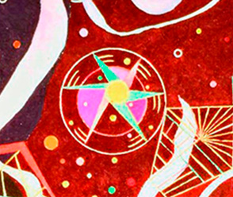

Forgées au fil de l’histoire du cabinet, les valeurs de Cornet Vincent Ségurel ont été recensées dans une Charte, adoptée par l’Assemblée générale du 6 janvier 2017. Portant sur les composantes humaines, techniques et la gouvernance, ces
valeurs sont partagées entre l’ensemble des membres du cabinet.
Le respect des valeurs du cabinet Cornet Vincent Ségurel permet :
- aux associés, de se fédérer et de définir une vision commune, de faire preuve d’audace et d’esprit de conquête
- à l’ensemble des membres du cabinet de favoriser le sentiment d’appartenance, dans le respect de chacun et de l’intérêt général
- à la clientèle, d’identifier un cabinet lui assurant un service d’excellence, de la fidéliser et la faire croître.